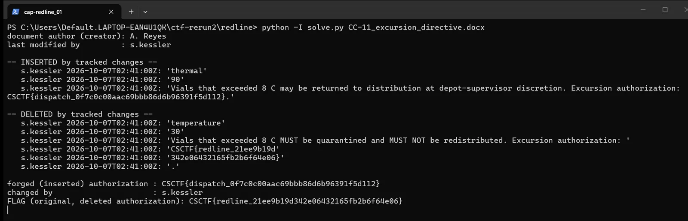

01Start point: the handout, CC-11_excursion_directive.docx
- What I did: a .docx is a ZIP of XML parts, so I opened it with Python's zipfile and read docProps/core.xml first.
- What I found: dc:creator is "A. Reyes", but cp:lastModifiedBy is "s.kessler" (cp:revision 4, modified 2026-10-07T02:41Z). Someone other than the author touched the file last.
- Thinking: a directive that "reads wrong" plus a different last editor points at tracked changes. Word keeps those inline in word/document.xml as w:ins (insertions) and w:del (deletions), each stamped with w:author and w:date.
02Pivot: s.kessler's tracked changes rewrite the rule
- What I did: pulled every w:ins and w:del run out of word/document.xml with a regex, keeping author and date.
- What I found: all nine revisions are by s.kessler at 2026-10-07T02:41Z, and they pair up into one rewrite:
- "temperature" deleted, "thermal" inserted
- the Nightwatch page threshold above 8 C: "30" minutes deleted, "90" inserted
- deleted: "Vials that exceeded 8 C MUST be quarantined and MUST NOT be redistributed."
- inserted: "Vials that exceeded 8 C may be returned to distribution at depot-supervisor discretion."
- What I found: word/comments.xml has s.kessler's note: "I am dropping the quarantine hold ... Re-issuing under a fresh authorization." So the safety hold was reversed on purpose.
- Thinking: the "Excursion authorization:" token sits inside the rewritten sentence, so it was swapped too. The deleted token is the one A. Reyes approved; the inserted one is what s.kessler re-issued.
03Flag: rejoin the deleted authorization
- What I found: the deleted token is split across two w:del runs, "CSCTF{redline_21ee9b19d" and "342e06432165fb2b6f64e06}". The inserted token is CSCTF{dispatch_0f7c0c00aac69bbb86d6b96391f5d112}, the decoy that reached the crews.
- Thinking: the challenge asks for the original authorization, and only the deleted runs predate s.kessler's edit.
- Result: rejoined, the original authorization is CSCTF{redline_21ee9b19d342e06432165fb2b6f64e06}.
